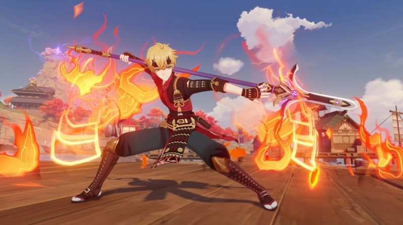
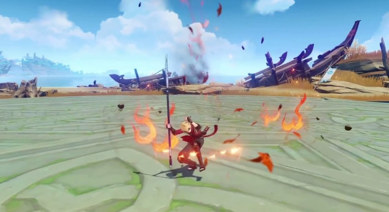

Гайд на Тому
В Genshin Impact Тома представляет собой 4-звездочного персонажа, который использует в бою древковое оружие и относится к Пиро стихии. В отряде он может играть роль как второстепенного дамагера, так и полноценного саппорта, накладывающего на союзников щит. В данном гайде вы узнаете про его лучшие билды, оружие и артефакты. Мы также расскажем про оптимальные команды с ним.
Особенности и преимущества Томы
Управляющий клана Камисато благодаря его элементальным способностям может использоваться для создания мощных стихийных реакций, например, Пара или Таяния и защиты напарников при помощи щита. К его плюсам можно также отнести:
Способен наносить Пиро урон по площади, даже находясь вне поля битвы, что упрощает комбинирование стихий.
Может накладывать щит своим элементальным умением и взрывом стихий, который особенно эффективен против огненных атак.
У него гораздо проще открыть все созвездия в сравнении с 5-звездочными персонажами.
Крайне полезен во время рыбалки.

Однако не обошлось и без недостатков, а именно:
Имеет низкий показатель базовой атаки, из-за чего он не способен заменить основного ДД.
Его щит не такой прочный, как хотелось бы.
Взрыв стихий требует много энергии
На перезарядку элементального умения уходит довольно много времени
Его обычная атака «Копья разрушения» позволяет ему наносить до четырех последовательных ударов. При использовании заряженной атаки он расходует немного выносливости, чтобы сделать рывок вперед, нанося урон всем врагам на своем пути.
При применении элементального умения «Пылающий покров» Тома подпрыгивает и бьет врагов своими ногами, нанося им огненный урон и создавая Пылающий щит, накладывающий на него эффект Пиро. Благодаря этому барьеру Тома будет способен поглотить определенное количество повреждений, зависящее от его максимального здоровья.
Следует отметить, что поглощение Пиро повреждений происходит на 250 процентов эффективнее. Кроме того, если вы вызовите второй щит при действии первого, то его оставшееся поглощение прибавится к новому барьеру. Время действия защиты обновится.
В случае использования взрыва стихии «Багровый оерой» Тома начнет вращать свое копье, чтобы рассечь противников ревущим пламенем, нанося огненный урон по площади и создавая Оерой огня. Пока действует последний, обычные атаки активного персонажа будут вызывать Огненный разрыв, наносящий еще больше Пиро урона по площади и вызывающий Пылающий щит. Этот эффект способен проявиться лишь раз в секунду.
Созданный барьер при этом идентичен тому, который формируется при элементальном умении персонажа. Если Тома умрет, то действие Оероя огня тут же прекратится. Добавим, что для обеих способностей героя характерно следующее правило – щит не может поглотить урон, превышающий определенную часть от максимального здоровья Томы.
Если же рассматривать пассивные умения Томы, то к ним относятся:
Замах и заброс – во время рыбалки появляется 20-процентный шанс на получение двойного улова. Так что следует обязательно держать данного героя в отряде при ловле рыбы.
Перекрывающая броня – при получении или обновлении Пылающего щита прочность барьера активного героя увеличивается на 5 процентов на протяжении 6 секунд. Эффект проявляется раз в 0,3 секунды и суммируется до 5 раз.
Пламенная атака – наносимые Огненным разрывом повреждения повышаются на 2,2 процента от максимального значения здоровья персонажа.
Как играть за Тому
Здесь все довольно просто. Если вы планируете использовать данного героя только в качестве саппорта, то основной упор необходимо делать на его взрыве стихий, который не только снабжает команду щитом, но и дополнительным Пиро уроном.
В результате вам нужно будет просто время от времени переключаться на него, чтобы применить его ульту, а затем снова возвращаться к основному DPS, которым может оказаться Крио или Гидро боец, для создания Таяния или Пара соответственно. Можно также взять Пиро дамагера, чтобы усилить его атаки.
Если же вы собираетесь сделать из него второстепенного DPS, то нужно будет также усилить его элементальное умение, чтобы вы смогли подольше держать его на поле боя. В этом случае необходимо применить его взрыв стихии, а затем при возможности активировать элементальный навык, чтобы укрепить и обновить шит. Распространив Пиро статус, переключитесь на основного ДД для создания какой-нибудь реакции.